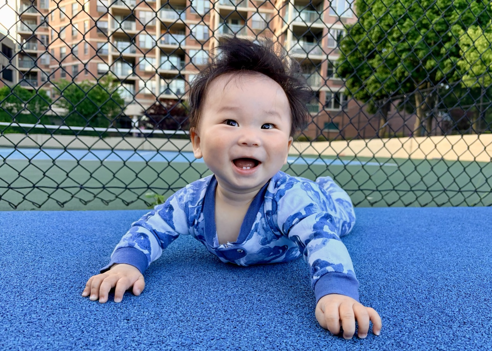
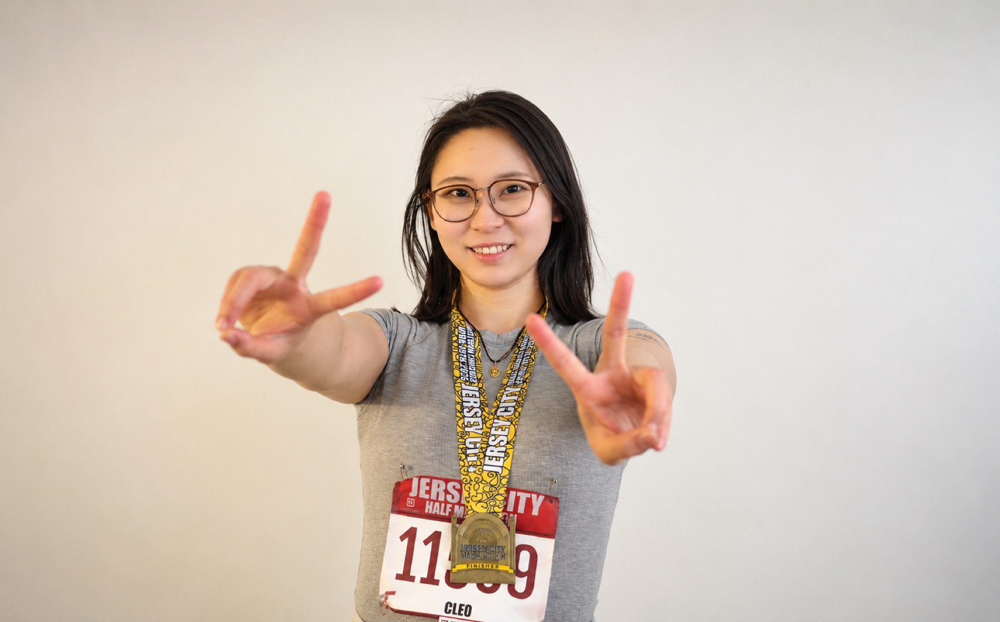

Online Communities and Platforms
How platform governance and AI participation shape online behavior and collective trust.
PhD Candidate in Information Systems and Analytics
I am a PhD candidate in Information Systems & Analytics at Stevens Institute of Technology, expecting to graduate in May 2027.
My research examines digital discourse on platforms and its social and economic consequences. I develop computational approaches using NLP and multimodal AI to study platform governance and how communication shapes market outcomes.
Before my PhD, I trained in media, culture, and communication at New York University and advertising at Minzu University of China, with prior industry experience in publishing, marketing, and financial news.
How platform governance and AI participation shape online behavior and collective trust.
How communication in podcasts and online communities relates to venture funding and municipal bond markets.
Computational measurement using NLP and multimodal AI, combined with causal inference.
Job Market Paper / Work in progress
Develops a multimodal framework to measure podcast content, structure, and delivery and examine their relationship with venture funding.
Major revision at MIS Quarterly
Combines NLP with causal inference to examine how community bans reshape explicit and latent bias in online communities.
Under review at European Journal of Marketing
Uses complaint narratives and machine learning to predict whether consumers dispute company responses.
Work in progress
Examines whether local online discourse helps explain municipal borrowing costs beyond demographic indicators.
Work in progress
Examines how disclosures about algorithmic trading agents shape status, collective trust, and human–AI decision-making in investor communities.
Instructor / Fall 2026 / 45 students
I teach the technical foundations and business applications of AI, from predictive analytics and generative AI to computer vision and autonomous systems. The course connects these capabilities to managerial decisions about performance, cost, sourcing, and organizational adoption.
Course syllabus ↗Guest Lecturer / Spring 2026
Led hands-on Python labs on NLP and large language models, with guidance on interpreting and evaluating model outputs.
Interactive LLM lab ↗Teaching Assistant
A Multimodal Discourse Framework for Decoding Podcasts: Content, Structure, and Delivery
INFORMS Workshop on Data Science, San Francisco, CA / Scheduled
Comparing with the Machine: How Algorithmic Trading Agents Reshape Social Comparison in Online Investor Communities
DSI Annual Conference, San Francisco, CA / Scheduled
Computational Frameworks for Multimodal Digital Discourse
CTO Poster Reception, AOM Annual Meeting, Philadelphia, PA
How I Use AI in Academic Research
Pre-College Programs, Business & AI, Stevens Institute of Technology
Slides ↗Computational Frameworks for Multimodal Digital Discourse: Essays on Platforms, Podcasts, and Places
People + Machine Workshop, PhD Student Lightning Talks, Stevens Institute of Technology
A Podcast Analytics Approach for Decoding Entrepreneurial Storytelling
PDW at Computational Methods in Management Research Workshop, University of Notre Dame
A Podcast Analytics Approach for Decoding Entrepreneurial Storytelling
PhD Research Showcase Day, Stevens Institute of Technology
A Podcast Analytics Approach for Decoding Entrepreneurial Storytelling
35th Workshop on Information Technologies and Systems (WITS), Nashville, TN
A Podcast Analytics Approach for Decoding Entrepreneurial Storytelling
School of Business IS&A Research Seminar, Stevens Institute of Technology
The Deplatforming Paradox
MIS Quarterly Author Development Workshop, Virtual
The Deplatforming Paradox
INFORMS Annual Meeting, Phoenix, AZ
The Deplatforming Paradox
School of Business IS&A Research Seminar, Stevens Institute of Technology
Besides research, I'm usually wrangling my infant son, keeping my cat full & entertained, working out on a court or in the gym.
Life at home includes an orange tabby who keeps me company.

I recently became a mom and am learning as I grow with my baby boy.

I enjoy running and court sports, and completed a half marathon within six months postpartum.